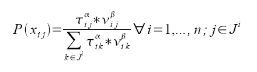
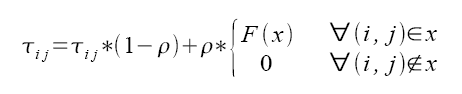
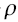

The local information is known as priority rule and most likely depends on the adjacent edge to the current knot. In the native model it could be the ability to notice the pheromone. The amount of pheromone will be represented as a float in the pheromone matrix. Each time an ant has finished its trail, the matrix will be updated and the grading of the trail will be calculated.
A way through a graph with n vertices consists of n-1 edges of tuples (i,j). Each transition from one knot i to another knot j xij happens with different Probability. The term for the probability for an ant to chose knot j while being at knot i is:

 ij is the value of the pheromone at the edge (i,j) and
ij is the value of the pheromone at the edge (i,j) and  ij is the value of the
rule of priority for (i,j). Alpha and beta are parameter which adjust the influence of the pheromone and the influence of
the heuristic information of the priority rule.
Ji is the set of all possible vertices which can be reached from the current knot i, which means all unvisited vertices.
Depending on the calculated probabilities a Monte-Carlo selection of the next knot is done.
When an ant reaches its destination, the pheromone will be dropped on the edges the ant took.
But the artifical pheromone might be different from the one found in nature, the information of
how long it took the ant to pass this edge is not important but other criteria might be interesting
e.g. for the Travelling Salesman Problem costs (such as kilometers). Those criteria will form the
final grading of the path.
ij is the value of the
rule of priority for (i,j). Alpha and beta are parameter which adjust the influence of the pheromone and the influence of
the heuristic information of the priority rule.
Ji is the set of all possible vertices which can be reached from the current knot i, which means all unvisited vertices.
Depending on the calculated probabilities a Monte-Carlo selection of the next knot is done.
When an ant reaches its destination, the pheromone will be dropped on the edges the ant took.
But the artifical pheromone might be different from the one found in nature, the information of
how long it took the ant to pass this edge is not important but other criteria might be interesting
e.g. for the Travelling Salesman Problem costs (such as kilometers). Those criteria will form the
final grading of the path.The amount of artifical pheromone an ant will emit depends on the final result of the solution it found. The final result of the ant will as well be encoded in the pheromone matrix, to take the evaporation into account the influence of the old entries will be decreased by the evaporation factor. In mathematical terms:

Hereby
ij*(1-) is the evaporation and is the factor of evaporation.
The second part of the formula represents the deposition of pheromone. This summand is zero if
the ant did not pass the edges. Otherwise a certain function F(x) will be included in the rating.There are some more extensions of the algorithm of Dorigo. Another way, which helps to find solutions which are really similar to each other is, instead of choose an edges via a Monte-Carlo simulation, choose it deterministically with respect to the highest value of the product of pheromone value and priority rule.
Another variant of the algorithm is only to let certain ants (e.g. which found the best results) drop their pheromon.
A problem of the algorithm is that a path on the graph might be marked to early as potentially being an optimal solution and the real optimal solution might be ignored. Therefore, its necessary to change the parameters Alpha, Beta and Evaporation to force the ants to take different paths. More precisely, a high value of alpha leads to stagnation, a smaller divergence of the solutions, on the other hand a higher value for Beta means, the search is more greedy, i.e. more randomly. A way to escape the problem of stagnation is to reset the pheromone values to its initial values:

where
0 is the initial value of the pheromone. The artificial value of the scent will be
adjusted depending on  , if the edges (i,j) takes part in the current solution.
This idea limit the pheromone values and forces the ants not to focus on one way too early.
By decreasing the value of alpha, the pheromone will loose its influence on the ants and
the search for solutions will be more dependent on the priority rule, which means that
the time it takes to find an acceptable solution increases, as the ways will be picked less dependent on previous ants.
To find the balance between the two parameters highly depends on the considered problem and therefore it is
necessary to adjust the parameters for each single problem.
, if the edges (i,j) takes part in the current solution.
This idea limit the pheromone values and forces the ants not to focus on one way too early.
By decreasing the value of alpha, the pheromone will loose its influence on the ants and
the search for solutions will be more dependent on the priority rule, which means that
the time it takes to find an acceptable solution increases, as the ways will be picked less dependent on previous ants.
To find the balance between the two parameters highly depends on the considered problem and therefore it is
necessary to adjust the parameters for each single problem.
More information to be found in:
Éric Bonabeau, Marco Dorigo, Guy Theraulaz: Swarm Intelligence: From Natural to Artificial Systems.
M. Dorigo, M. Birattari, T. Stützle: Ant Colony Optimization: Artificial Ants as a Computational Intelligence Technique.